Orbbec Gemini E for Robotics¶
This guide is a practical training document for using the Orbbec Gemini E in robotics projects with ROS 2 and the OrbbecSDK_ROS2 wrapper.
The focus here is not just “how to make the camera work”, but how to use it correctly on a robot: where it fits, where it does not, how to tune it for low latency, and how to avoid the common mistakes that waste integration time.
Original datasheet attachment: Gemini E Datasheet v1.1 (PDF)
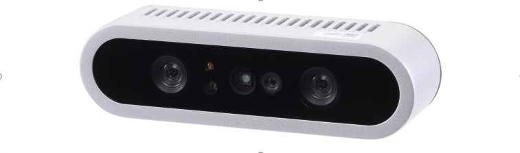
Front view of the Gemini E camera from the datasheet.
1. What the Gemini E is good at¶
The Gemini E is a short-range RGB-D camera based on active stereo IR. It is a strong fit for:
- Indoor mobile robots
- Tabletop perception
- Manipulation and grasping pipelines
- Human detection and nearby obstacle sensing
- Robot docking and short-range scene understanding
It is not the right tool for every vision problem. The biggest constraints are:
- No built-in IMU
- USB 2.0 bandwidth
- Best depth range is close to the robot
- Active IR depth is much better indoors than in strong sunlight
If your stack depends on visual-inertial odometry, tight motion estimation, or robust outdoor operation in bright sun, plan for an external IMU and be realistic about depth performance.
2. Key hardware facts¶
The following values come from the Gemini E datasheet v1.1:
| Item | Value |
|---|---|
| Depth technology | Active Stereo IR |
| Depth field of view | 79 degrees horizontal x 62 degrees vertical |
| Color field of view | Up to 84.3 degrees horizontal x 53.6 degrees vertical |
| Depth range | 0.2 m to 2.5 m |
| Depth frame rates | Up to 30 fps |
| RGB frame rates | Up to 30 fps |
| RGB max resolution | 1920 x 1080 |
| Connection | USB 2.0 Type-C for power and data |
| Power | Average below 2.3 W, peak 5 W |
| IMU | Not available |
| Dimensions | 89.82 x 25.10 x 25.10 mm |
| Weight | 88.3 g |
| Mounting | Bottom M3, rear 2 x M3 |
| Operating environment | 10 C to 40 C, indoor or semi-outdoor |
What these numbers mean for robot design¶
0.2 m to 2.5 mmeans the Gemini E is a near-field sensor. Treat it as a local perception camera, not a long-range navigation lidar replacement.USB 2.0means bandwidth matters. High resolution RGB plus depth plus IR plus point cloud at the same time can overload weaker systems.No IMUmeans you should not expect the camera alone to support full VIO or stable motion estimation on a moving robot.Wide FOVis useful when the camera is mounted close to the work area or low on a mobile base.
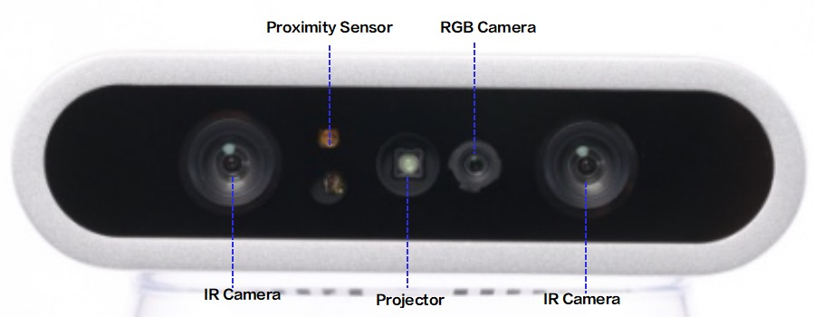
Sensor layout from the datasheet showing the stereo IR cameras, projector, RGB camera, and proximity sensor.
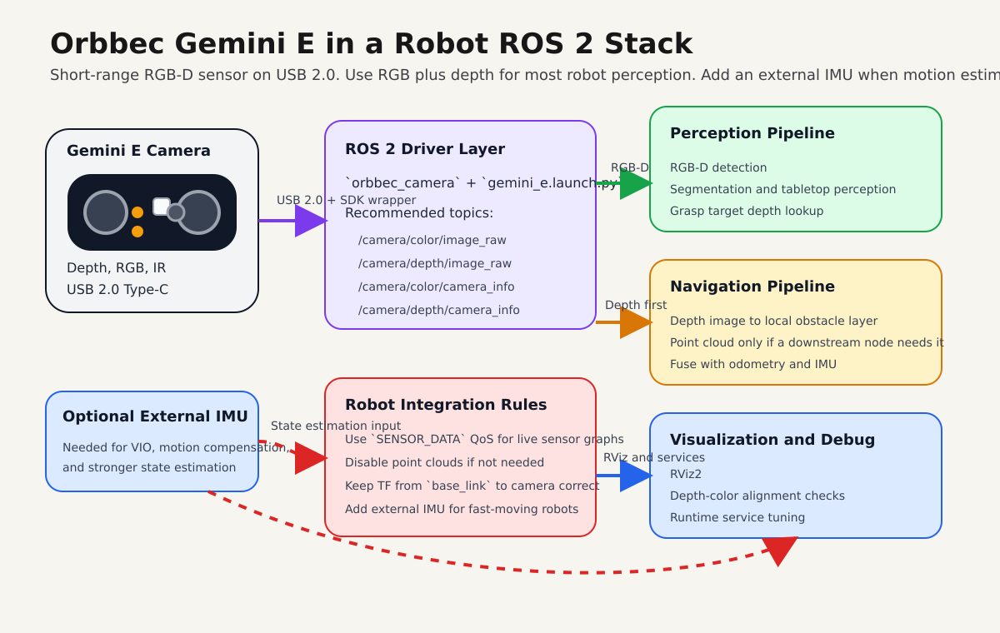
Recommended robotics integration path: use RGB plus depth as the default, keep point clouds optional, and add an external IMU when state estimation quality matters.
3. Best robotics use cases¶
Mobile robot perception¶
Use the Gemini E for:
- Nearby obstacle perception
- Docking
- Doorway and corridor understanding
- Detecting low or irregular obstacles that 2D lidar can miss
Recommended working range:
0.25 m to 2.0 mfor practical onboard use
Manipulation and pick-and-place¶
Use the Gemini E for:
- Object detection with aligned depth
- Tabletop segmentation
- Bin observation at short range
- Hand-eye setups on small robot arms
Recommended working range:
0.2 m to 1.2 m
Human-robot interaction¶
The wide field of view and short-range depth make it useful for:
- People detection near the robot
- Gesture-adjacent interaction
- Service robot front-facing perception
4. Where to mount it on a robot¶
Good mechanical integration matters as much as software.
- Mount the camera rigidly. Small vibrations become noisy depth edges.
- Keep the front glass clean. Fingerprints and dust reduce image quality.
- Avoid mounting directly beside motors, hot compute modules, or exhaust airflow.
- If you use an enclosure, leave space for cooling. The datasheet explicitly warns about heat buildup.
- Use a short, good-quality USB cable. The datasheet recommends a certified cable and a maximum length of about
1 m to 1.5 m. - For a mobile base, a slight downward tilt often works best so the depth image covers the floor in front of the robot.
- For manipulation, mount the camera so the main workspace sits comfortably inside the
0.2 m to 1.2 mdepth region.
Practical mounting suggestions¶
- Front-facing mobile robot: mount above bumper height, angled down
10 to 20degrees. - Tabletop robot arm: mount above or beside the workspace with clear sight lines to the whole table.
- Docking robot: keep the camera centered to reduce calibration complexity.
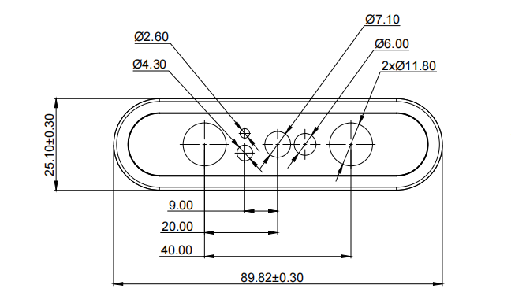
Front mechanical dimensions from the datasheet.
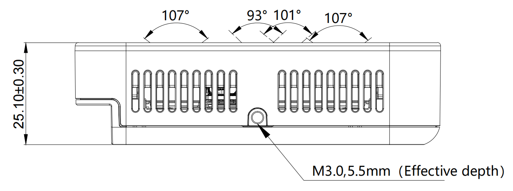
Side view showing body dimensions and the M3 mounting point depth.
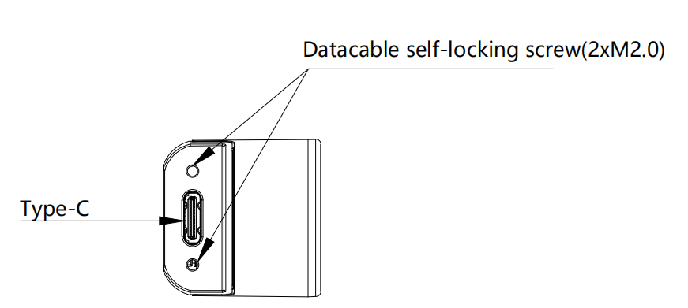
Rear view showing the USB Type-C interface and rear fastener locations.
5. ROS 2 stack used in this workspace¶
This guide assumes the Orbbec ROS 2 wrapper is available in a workspace such as:
~/ros2_ws/src/OrbbecSDK_ROS2
For Gemini E, the relevant launch file is:
orbbec_camera/launch/gemini_e.launch.py
The local launch defaults are important:
| Stream | Default setting in gemini_e.launch.py |
|---|---|
| Color | 640x480 @ 30, format MJPG |
| Depth | 640x480 @ 30, format Y11 |
| IR | 640x480 @ 30, format Y10 |
| Point cloud | Enabled |
| Colored point cloud | Disabled |
| Depth registration | Disabled |
| Soft filter | Enabled |
| Align mode | HW |
Important implication¶
The default launch enables point clouds. For many robots, that is not the best default. If your downstream stack only needs depth images, disable point cloud generation to save CPU, bandwidth, and DDS load.
6. Install and build¶
If the package is already built in your workspace, skip to the next section.
cd ~/ros2_ws/src
git clone https://github.com/orbbec/OrbbecSDK_ROS2.git
sudo apt install libgflags-dev nlohmann-json3-dev \
ros-$ROS_DISTRO-image-transport \
ros-$ROS_DISTRO-image-transport-plugins \
ros-$ROS_DISTRO-compressed-image-transport \
ros-$ROS_DISTRO-image-publisher \
ros-$ROS_DISTRO-camera-info-manager \
ros-$ROS_DISTRO-diagnostic-updater \
ros-$ROS_DISTRO-diagnostic-msgs \
ros-$ROS_DISTRO-statistics-msgs \
ros-$ROS_DISTRO-backward-ros \
libdw-dev
cd ~/ros2_ws/src/OrbbecSDK_ROS2/orbbec_camera/scripts
sudo bash install_udev_rules.sh
sudo udevadm control --reload-rules
sudo udevadm trigger
cd ~/ros2_ws
colcon build --packages-select orbbec_camera orbbec_camera_msgs orbbec_description \
--event-handlers console_direct+ \
--cmake-args -DCMAKE_BUILD_TYPE=Release
source ~/ros2_ws/install/setup.bash
7. First bring-up¶
Start with the simplest reliable launch:
source ~/ros2_ws/install/setup.bash
ros2 launch orbbec_camera gemini_e.launch.py
In another terminal:
source ~/ros2_ws/install/setup.bash
ros2 topic list
ros2 service call /camera/get_device_info orbbec_camera_msgs/srv/GetDeviceInfo '{}'
ros2 service call /camera/get_sdk_version orbbec_camera_msgs/srv/GetString '{}'
To visualize:
source ~/ros2_ws/install/setup.bash
rviz2
Recommended first checks:
- Confirm
/camera/depth/image_rawis publishing - Confirm
/camera/color/image_rawis publishing - Confirm TF includes
camera_linkand optical frames - Confirm frame rate is stable with
ros2 topic hz
Example:
ros2 topic hz /camera/depth/image_raw
ros2 topic hz /camera/color/image_raw
RViz examples¶
The following screenshots are representative RViz views from the local Orbbec ROS 2 wrapper documentation. They are useful as visual references when bringing the camera up for the first time.
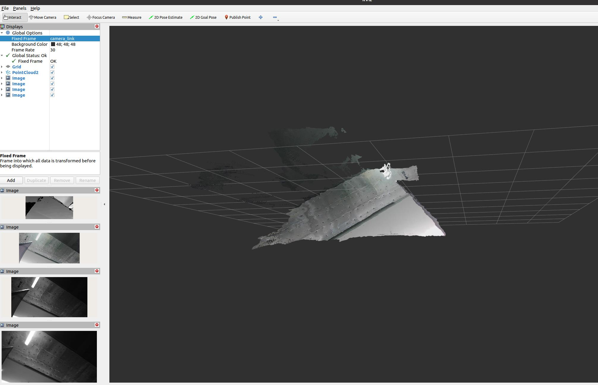
Depth and image streams visible in RViz. This is the kind of view you want during first bring-up when verifying that the camera is publishing stable image data.
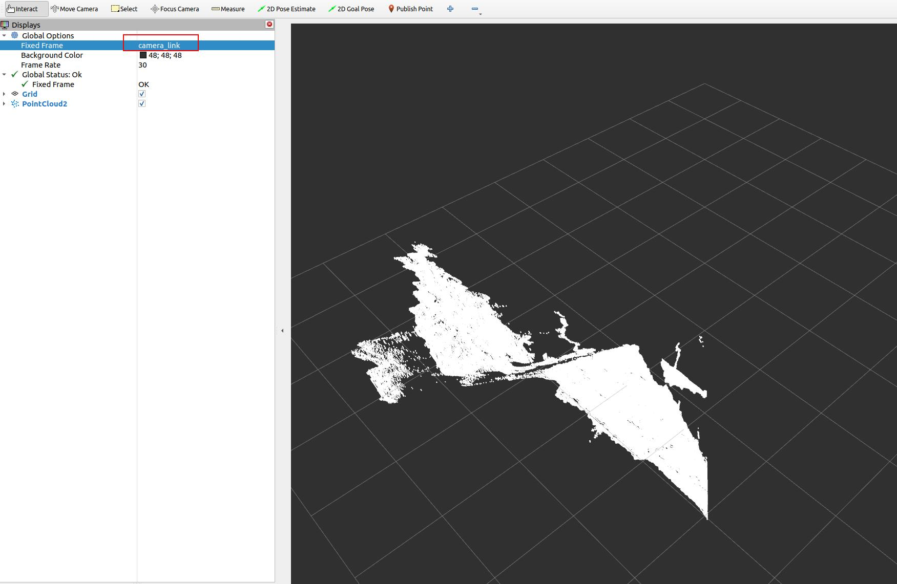
Depth point cloud view in RViz using /camera/depth/points. This is useful for validating geometry, floor visibility, and TF orientation.
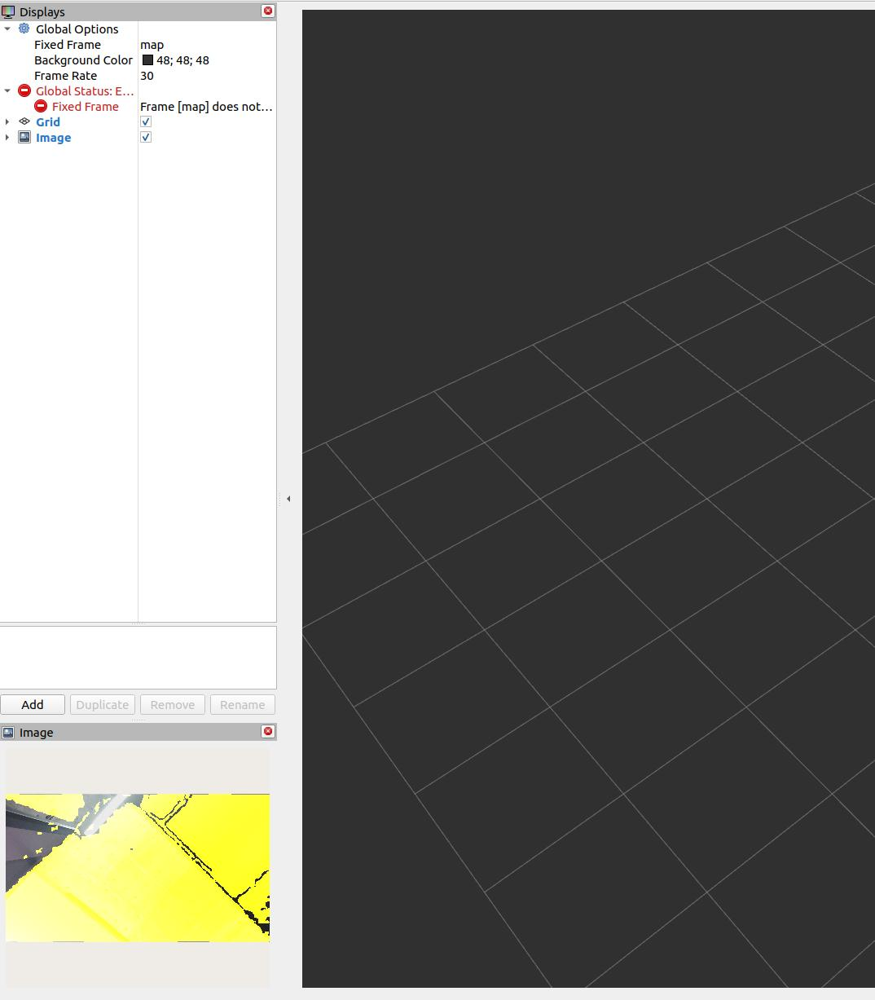
Aligned RGB-D style output in RViz. This is the kind of image you should expect when depth_registration:=true is enabled and you are checking whether depth correctly overlays the color image.
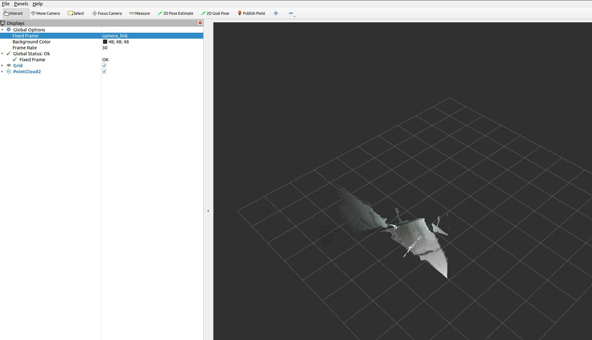
Colored point cloud in RViz using /camera/depth_registered/points. Use this when the downstream stack truly needs fused color and 3D structure.
8. Core topics you will actually use¶
| Topic | Use |
|---|---|
/camera/color/image_raw |
RGB image for detection or visualization |
/camera/depth/image_raw |
Raw depth image |
/camera/depth/points |
Point cloud from depth |
/camera/depth_registered/points |
Colored point cloud |
/camera/ir/image_raw |
IR image for debugging or custom vision |
/camera/color/camera_info |
Color intrinsics |
/camera/depth/camera_info |
Depth intrinsics |
/diagnostics |
Camera diagnostics |
If your perception stack does not consume point clouds directly, use depth images first. It is usually cheaper and easier to debug.
9. Recommended launch profiles for robot work¶
Profile A: Low-latency mobile robot depth¶
Use this when the robot mainly needs near-field obstacle perception.
ros2 launch orbbec_camera gemini_e.launch.py \
enable_color:=false \
enable_ir:=false \
enable_point_cloud:=false \
enable_colored_point_cloud:=false \
depth_registration:=false \
depth_qos:=SENSOR_DATA \
depth_camera_info_qos:=SENSOR_DATA
Why:
- Lowest bandwidth
- Lowest CPU load
- Simplest path into
depthimage_to_laserscanor custom obstacle logic
Profile B: RGB-D perception for detection and manipulation¶
Use this when you need color plus aligned depth for object detection, segmentation, or grasp planning.
ros2 launch orbbec_camera gemini_e.launch.py \
enable_ir:=false \
enable_point_cloud:=false \
enable_colored_point_cloud:=false \
depth_registration:=true \
color_qos:=SENSOR_DATA \
depth_qos:=SENSOR_DATA \
color_camera_info_qos:=SENSOR_DATA \
depth_camera_info_qos:=SENSOR_DATA
Why:
- Keeps RGB and depth available
- Depth registration makes RGB-depth fusion easier
- Avoids point cloud overhead unless the pipeline really needs it
Profile C: Point cloud perception¶
Use this only if the downstream node truly needs 3D points.
ros2 launch orbbec_camera gemini_e.launch.py \
enable_ir:=false \
enable_point_cloud:=true \
enable_colored_point_cloud:=true \
depth_registration:=true \
point_cloud_qos:=SENSOR_DATA \
color_qos:=SENSOR_DATA \
depth_qos:=SENSOR_DATA
Why:
- Gives you a colored point cloud
- Good for 3D inspection, segmentation, or local mapping
Tradeoff:
- Highest CPU, memory, and DDS load of the common profiles
Profile D: Calibration and debugging¶
Use this when checking overlay quality, exposure, or stream issues.
ros2 launch orbbec_camera gemini_e.launch.py \
depth_registration:=true \
enable_d2c_viewer:=true \
log_level:=debug
Why:
- Makes RGB-depth alignment errors obvious
- Debug logs help when the wrapper is unstable or the stream fails
10. Tuning rules that matter¶
10.1 Disable what you do not use¶
This is the single most useful rule.
- If you do not need point clouds, disable them.
- If you do not need IR, disable it.
- If you do not need RGB, disable it.
- If you do not need depth registration, leave it off.
10.2 Use SENSOR_DATA QoS for robot sensor pipelines¶
For local perception graphs, SENSOR_DATA is usually the right choice for:
color_qosdepth_qosir_qospoint_cloud_qos- camera info QoS
This reduces lag compared with more reliable but slower defaults in many robotics workloads.
10.3 Respect USB 2.0 limits¶
The Gemini E is a USB 2.0 camera. That matters.
- Prefer
640x480or640x360for reliable onboard processing - Keep RGB in
MJPGwhen possible - Avoid enabling every stream at full rate on weak CPUs
- If performance becomes unstable, reduce streams before reducing code quality elsewhere
10.4 Use aligned depth only when needed¶
depth_registration:=true is useful for:
- RGB object detection with depth lookup
- colored point clouds
- grasp selection in image space
But it adds computation. Leave it off for pure navigation or pure depth pipelines.
10.5 Add an external IMU if the robot moves aggressively¶
The datasheet lists IMU: N/A.
If you need:
- motion compensation
- tilt-aware perception
- VIO
- visual-inertial SLAM
then use a separate IMU and fuse it with your robot state estimation stack.
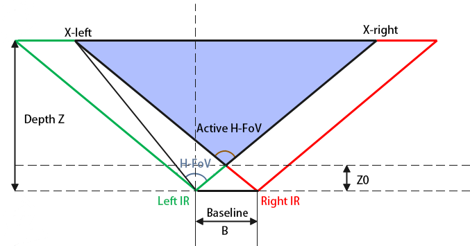
Depth field-of-view geometry from the datasheet. This is useful when estimating how much floor, workspace, or docking target area is visible at a given mounting height and distance.
11. Recommended ROS 2 integration patterns¶
Nav2 or collision avoidance¶
Good approaches:
- Convert depth image to a 2D scan using
depthimage_to_laserscan - Convert point cloud to scan using
pointcloud_to_laserscan - Fuse the camera with wheel odometry and an IMU in the navigation stack
Prefer depth image conversion first if you want the lightest pipeline.
SLAM and localization¶
The Gemini E can support RGB-D or depth-assisted mapping, but do not assume the camera alone is enough for robust localization on a moving robot.
Recommended sensor set:
- Gemini E
- Wheel odometry
- External IMU
Manipulation¶
For robot arms or tabletop robots:
- Enable color and depth
- Enable
depth_registration - Keep the workspace inside the short-range zone
- Use a fixed, calibrated transform from robot base or tool frame to camera frame
12. TF and frame setup¶
Do not leave TF as an afterthought.
The launch file already publishes a static transform from base_link to the camera link. You should set the mounting values correctly:
ros2 launch orbbec_camera gemini_e.launch.py \
base_to_camera_x:=0.18 \
base_to_camera_y:=0.0 \
base_to_camera_z:=0.42 \
base_to_camera_roll:=0.0 \
base_to_camera_pitch:=-0.20 \
base_to_camera_yaw:=3.141592653589793
Replace the values with your real mount geometry.
Bad TF is one of the most common reasons for:
- wrong point cloud orientation
- bad floor interpretation
- incorrect obstacle positions
- failed camera-arm coordination
13. Camera control services you should know¶
Useful runtime services exposed by the wrapper include:
/camera/get_device_info/camera/get_sdk_version/camera/get_color_exposure/camera/get_ir_exposure/camera/get_white_balance/camera/set_color_auto_exposure/camera/set_ir_auto_exposure/camera/set_laser_enable/camera/toggle_color/camera/toggle_depth/camera/toggle_ir
Examples:
ros2 service call /camera/get_device_info orbbec_camera_msgs/srv/GetDeviceInfo '{}'
ros2 service call /camera/set_color_auto_exposure std_srvs/srv/SetBool '{data: false}'
ros2 service call /camera/set_laser_enable std_srvs/srv/SetBool '{data: true}'
These are useful when you are tuning the camera on a live robot without restarting the full stack.
14. Performance tuning on Linux¶
The local Orbbec wrapper documentation recommends DDS and USB tuning for large image streams.
DDS guidance¶
For single-machine robotics setups, CycloneDDS is often a safer choice than untuned defaults.
Common local-only environment settings:
export ROS_DOMAIN_ID=42
export ROS_LOCALHOST_ONLY=1
export CYCLONEDDS_URI=file:///etc/cyclonedds/config.xml
Important:
- Use
ROS_LOCALHOST_ONLY=1only when all nodes run on the same machine. - If you need remote RViz, another onboard computer, or distributed robots, do not lock ROS traffic to localhost.
USB buffer tuning¶
If you get stream dropouts, especially with multiple cameras or heavy traffic:
echo 128 | sudo tee /sys/module/usbcore/parameters/usbfs_memory_mb
CPU and transport advice¶
- Build the wrapper in
Release - Prefer fewer streams over more compression tricks
- Avoid unnecessary RViz displays during benchmark runs
- If point clouds are only for logging, do not generate them during live operation
15. Failure modes and how to think about them¶
No device detected¶
Check:
- USB cable quality
- udev rules
- power from host port
- reconnect the camera fully
The datasheet explicitly recommends unplugging and reconnecting if the camera stops responding.
Frame drops or lag¶
Usually caused by one of these:
- Too many active streams
- Point cloud enabled when not needed
- Weak USB path or hub
- Untuned DDS
- RViz overloading the machine
Reduce complexity first. Do not start by blaming the algorithm stack.
Poor outdoor or reflective-surface depth¶
This is expected behavior for many active IR depth systems.
- Use it primarily indoors
- Shield from direct sunlight where possible
- Expect weak returns on black, shiny, or transparent objects
Bad perception while the robot is moving¶
The likely causes are:
- no IMU
- motion blur in RGB
- aggressive robot motion
- poor TF calibration
Do not try to “tune around” missing inertial information if the application fundamentally needs it.
16. A practical starting configuration¶
If you want one balanced starting point for most robots, use this:
ros2 launch orbbec_camera gemini_e.launch.py \
enable_ir:=false \
enable_point_cloud:=false \
enable_colored_point_cloud:=false \
depth_registration:=true \
color_qos:=SENSOR_DATA \
depth_qos:=SENSOR_DATA \
color_camera_info_qos:=SENSOR_DATA \
depth_camera_info_qos:=SENSOR_DATA
This gives:
- RGB plus depth
- simpler debugging than a full point cloud pipeline
- enough information for most perception tasks
- a manageable load on typical robot computers
17. Deployment checklist¶
Before declaring the camera “ready”, verify all of the following:
- The camera is rigidly mounted
- The lens and cover glass are clean
- The TF from
base_linkto the camera is measured correctly - Only required streams are enabled
ros2 topic hzis stable at the expected frame rate- CPU usage is acceptable during full robot operation
- Depth works across the actual working distance of the robot
- The robot stack is tested both stationary and moving
- You have an external IMU if the application needs one
18. References¶
- Gemini E Datasheet v1.1 (PDF)
- OrbbecSDK ROS 2 wrapper README and
gemini_e.launch.pyfrom the local ROS 2 workspace - Orbbec developer portal: https://orbbec3d.com/developers/